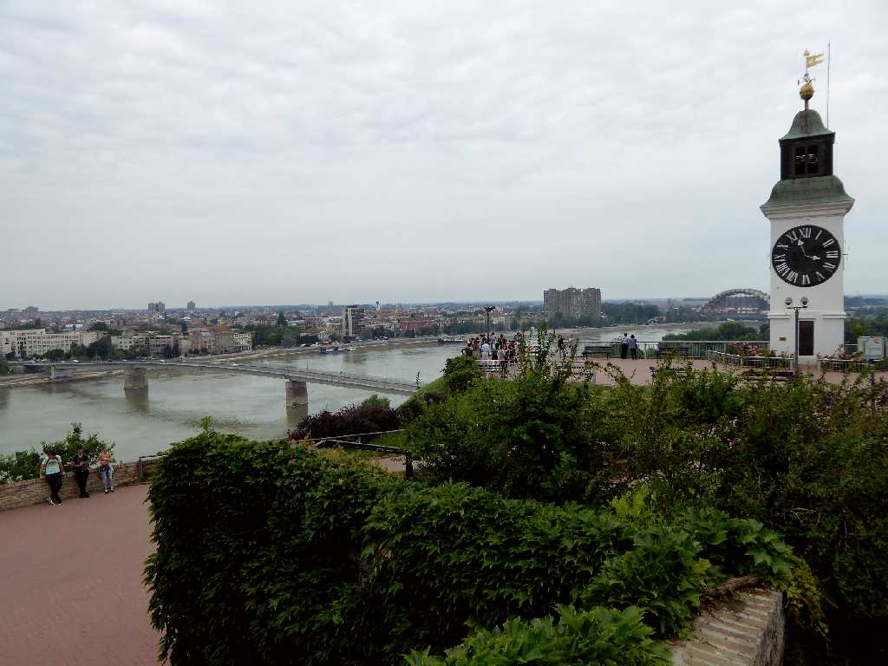
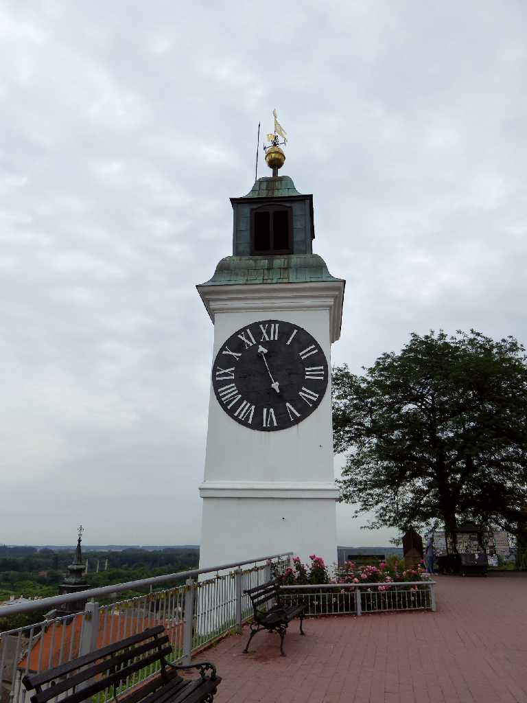
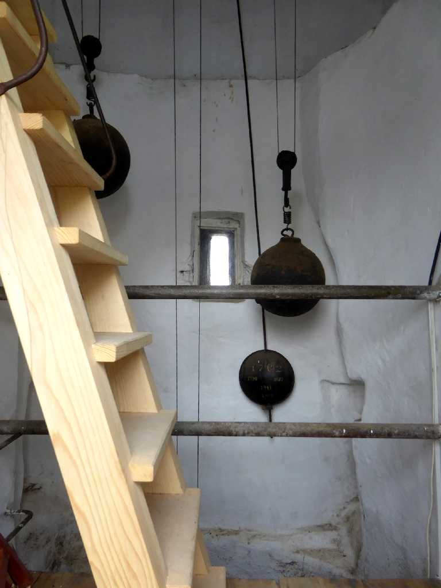
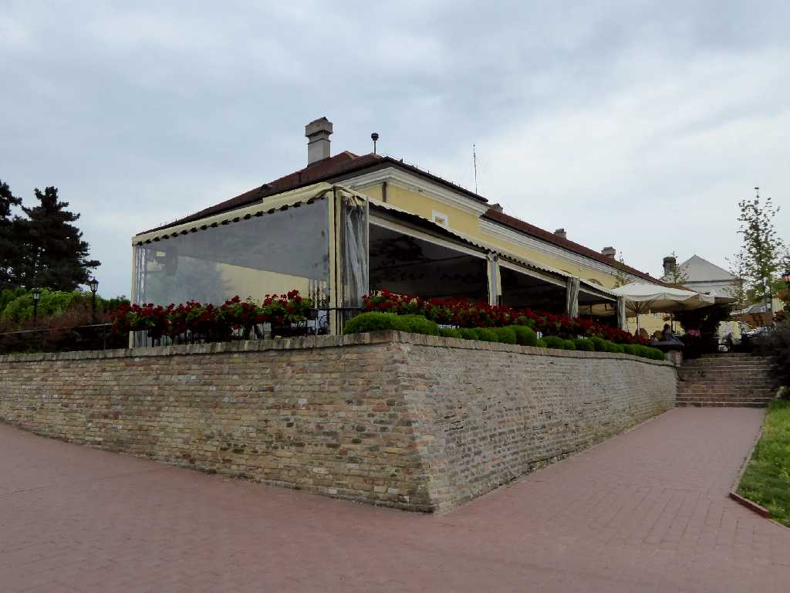
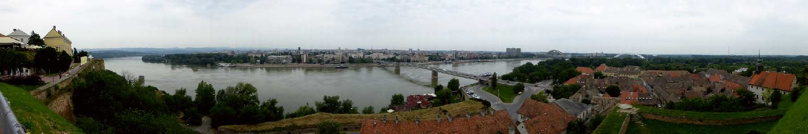
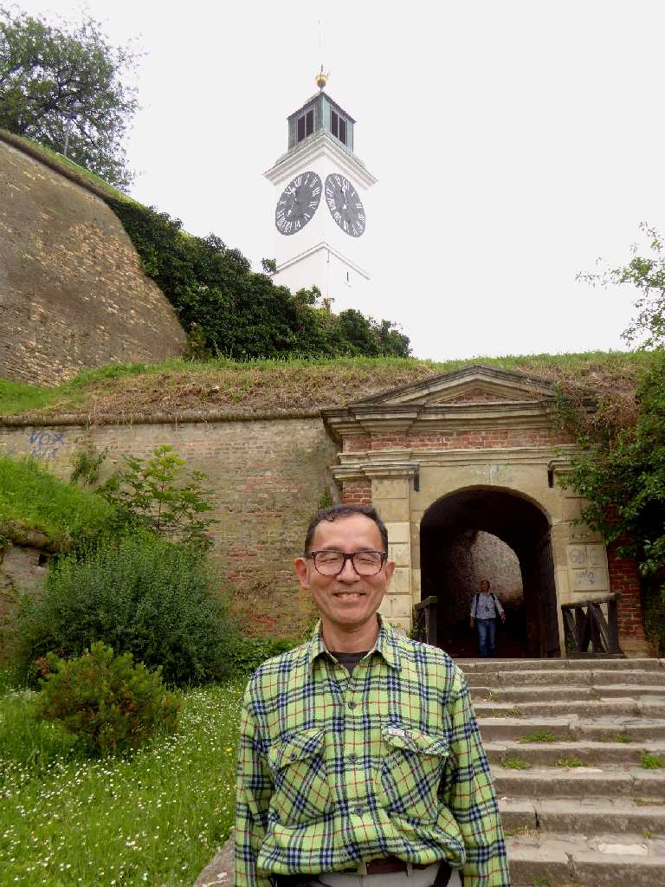
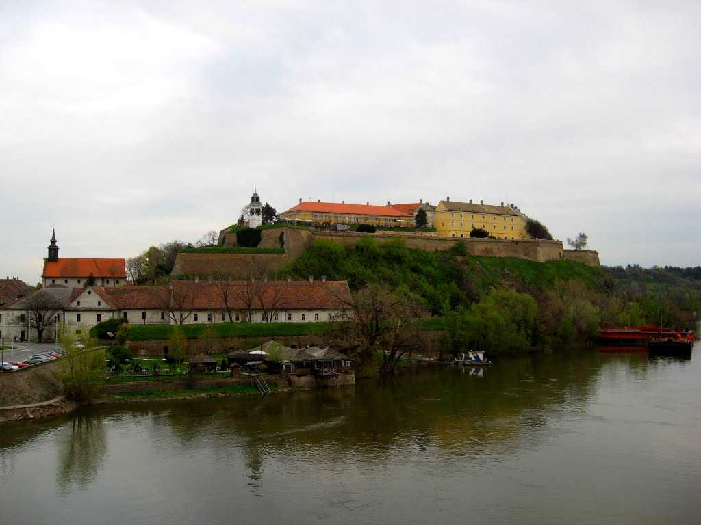

Petrovaradin Danube Novi Sad
ローマ時代の紀元前１世紀に創られたペトロヴァラディン要塞からドナウ河対岸のノビサドの街を望む
 
Clock Tower Petrovaradin
１７２８年に創られた時計塔は高さ５０mありドナウ河航行中の船乗りが目印として利用していたが遠くからでも時間が見易い様に長針と短針が逆になって折り今は１１時２６分です

Fortress Petrovaradin
１６９２年にハプスブルク家支配下のもとでオスマントルコに対抗するため創られたヨーロッパで２番目に大きな要塞

Petrovaradin Danube Novi Sad

June 10 2016 Petrovaradin Fortress

Fortress Danube Petrovaradin